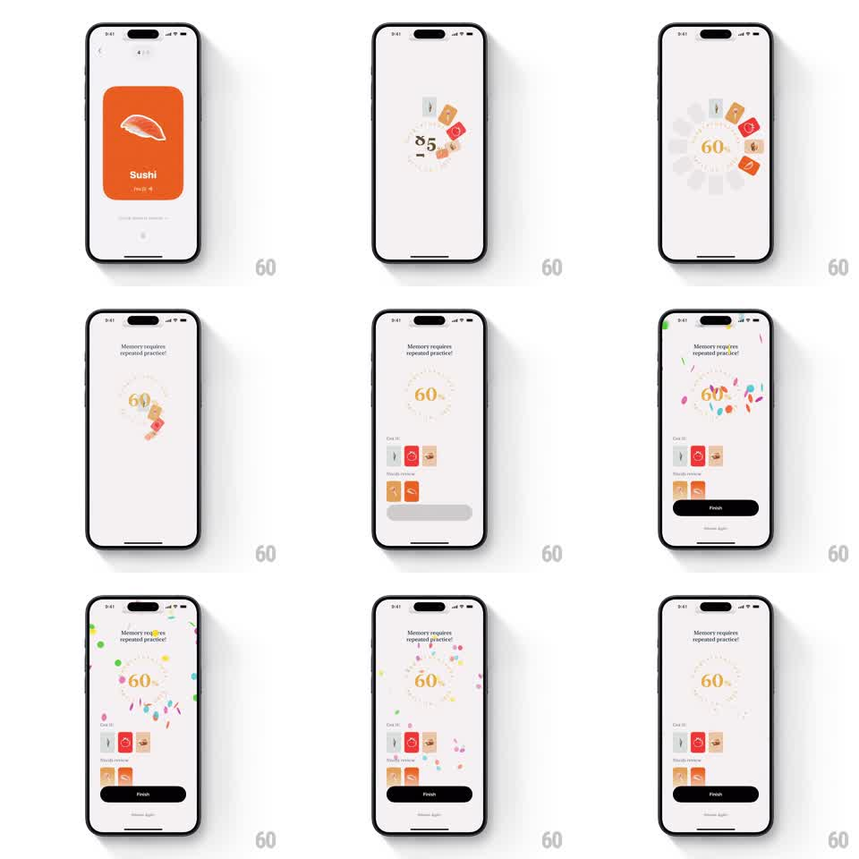

Media
Frame-by-frame

Rebuild this interaction 1:1: CapWords' practice completion - after the last card (a "Sushi" card), a circular progress wheel spins up with a ticking percentage counter (to 60%), "Memory requires repeated practice!" appears, result cards ("Got it!", "Needs review") stagger in, and a confetti burst celebrates as the black Finish button slides up.

Rebuild this interaction 1:1: CapWords' practice completion - after the last card (a "Sushi" card), a circular progress wheel spins up with a ticking percentage counter (to 60%), "Memory requires repeated practice!" appears, result cards ("Got it!", "Needs review") stagger in, and a confetti burst celebrates as the black Finish button slides up.
## Integration
Integration: stack-agnostic spec - springs given as stiffness/damping, timed motions as duration + curve; map every value to your framework and animation library of choice.
## Scene
Light screen. Start: a practice card (orange "Sushi" card with a fish cutout). Completion: a circular dashed progress ring with "60%" at center, the message "Memory requires repeated practice!" above, rows of result cards with thumbnails ("Got it!" / "Needs review"), a black "Finish" button, and a "Review Again" link. Confetti falls during the celebration.
## Motion spec
Pattern: progress wheel count-up with staggered results and confetti.
- The practice card flips away (rotateY 90deg, 250ms) as the ring draws itself (stroke animation 0 -> 60% of full circle, 800ms ease-out).
- The percentage counter ticks up in sync with the ring (60 steps, digit roll).
- Small word chips orbit briefly around the ring while it fills (3s rotation, fading out as it completes).
- "Memory requires repeated practice!" fades up (250ms).
- Result cards slide in staggered from the bottom (translateY 30pt -> 0, 280ms each, 100ms apart).
- Confetti burst: two cannons from the bottom corners (30-40 pieces, colorful rects and circles, 1.2s, gravity + drift).
- Finish button slides up (280ms) with Review Again fading in under it (200ms).
## Calibration
- Ring and counter stay locked in sync - never let the number lead the ring.
- Confetti is one burst, then ambient fall - not a repeating cannon.
## Reduced motion
Ring shows final value instantly, results fade in, no confetti.
## Don't miss
- The dashed ring style stays dashed while filling.
- Result cards show the actual practiced item thumbnails.